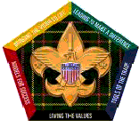

IMPORTANT: This website is moving! Our new home is NWDistrictScouts.com. Please update your bookmarks.
Training Opportunities
Northwest District, Erie Shores Council, BSA
|
Youth
Protection Training Policy Change Announced
As of June 1, 2010, Youth Protection Training is required for all registered volunteers and must be retaken every two years. New leaders must complete YPT before their application is turned in. A letter covering all of the changes can be found here . ~ YPT Classes for 2013 ~ Saturday, April 20, 2013 beginning at 12:00 Noon Saturday, May 4, 2013 beginning at 10:00 am All Classes are FREE of charge! C lasses are held in the Ford Center at Camp Miakonda |
Fast Start Training
Fast Start Training for Cub Leaders, Boy Scout Leaders and Venture Crew Advisors is available at BSA's Online Learning center. Go here to check it out!
Basic Adult Leader Outdoor Training (B.A.L.O.O.)
According to BSA guidelines… ”At least one adult on a Pack overnighter must have completed Basic Adult Leader Outdoor Orientation to properly understand the importance of program intent, youth protection guidelines, health and safety, site selection, age appropriate activities and sufficient adult participation.”
Satur
day March 2, 2013
8:30am to 4:00pm
at Providence Lutheran Church
(8131 Airport Highway Holland, OH 43528)
$15.00 per person
Registration Deadline: February 15, 2013
A flier with more info can be found here.
Cub Leader Training
Why Become a Trained Leader?
1) Boy Scouts of America National Office has mandated ALL ADULT Leaders
must be trained in order to hold any leadership position.
2) Every scout deserves a leader who understands the program and
knows how to deliver it with ENTHUSIASM and FUN!!
3) Research shows that scouts with trained leaders enjoy the program more and stay in longer!
Wednesday March 20, 2013 &
Wednesday March 27, 2013
6:30pm to 8:30pm both days
at Providence Lutheran Church
(8131 Airport Highway Holland, OH 43528)
$5.00 per person
Registration Deadline: March 6, 2013
A flier with more info can be found
here.
National Youth Leadership Training (NYLT)
Be part of the MOST advanced youth leadership course for Scouts! NYLT is a program that will help your Scouts develop both leadership skills and communication skills.
Pre-course meeting:
Thursday, May 23, 2013
7:00 pm – 8:00 pm at Camp Miakonda
This session is the deadline to turn in all paperwork & Medical Forms and pay all fees.
Course Week:
Sunday, June 9th to Friday, June 14th
at Camp Miakonda
$210 per person if paid by May 1, 2013.
The cost after May 1 is $230
A deposit of $50 is due with the reservation
Full payment is due by June 3, 2013.
A brochure with more info can be found
here.
|
Wood Badge C6-460-2013 |
 |
|
Wood Badge is open to all Scout leaders. The course has been developed for Cub Scout, Boy Scout, Varsity Scout, Venture Scout, District, and Council leaders. The course focus is on developing leadership skills, not on out-of-door skills. All participants must have completed the Basic Leader Training Course for their position in Scouting. Outdoor Skills Training is not required but would be useful..
|
|